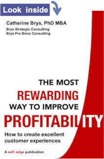
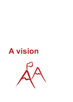
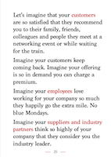
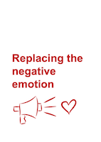
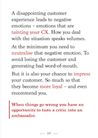
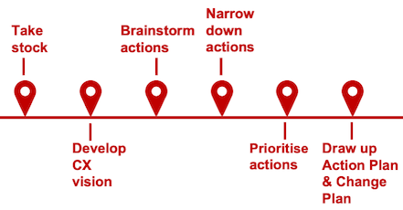
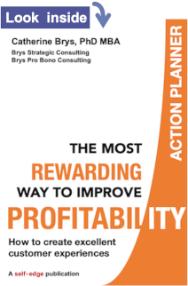
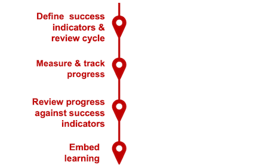
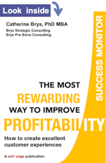

The Most Rewarding Way to Improve Profitability —
How to create excellent customer experiences
This book and the companion Action Planner and Success Monitor chart a practical route to make your company’s Customer Experience top-notch.
- The Book will challenge your thinking on Customer Experience. It gives you all the best practice you need to make your customer experiences superior in an easy-to-read format.
- The Action Planner gives you a pragmatic, step-by-step method to assess your CX and plan effective actions to achieve outstanding CX.
- The Success Monitor will guide you to develop a practical approach to monitor your success and sustain it into the future.
The journey you will make:
- One hour to kick-start your journey via the food for thought and best practice in the book.
- One day to solo-assess your Customer Experience and develop your vision.
- One week to collaboratively asses your Customer Experience with your teams and develop a pragmatic plan for impactful change.
- One month to implement changes and start monitoring success.
The Book
The book gives you the best in business thinking on Customer Experience in a compact and easy-to-read format. You can get the gist of the book in one hour — but you will keep coming back to it.
Part 1: Food for Thought
|
Part 2: Best Practice
|
|  | The Magic of CX sample page – PDF   |
Best Practice sample page – PDF   |
The Action Planner
The Action Planner will guide you to achieve outstanding customer experiences.
Via a structured step-by-step approach with practical tools you will:
- Take stock of your CX.
- Develop your CX vision.
- Draw up a prioritised action plan.
- Develop approaches for embedding change in your business.
At the end of the Action Planner you will have a pragmatic plan for impactful change.
 
The Success Monitor
The Success Monitor builds on the Action Planner. It will help you to steer your journey to sustained success.
Starting from your vision of success which you developed in the Action Planner, you will define success indicators. At the end of the Success Monitor you will be equipped with:
- A set of success indicators.
- A review cycle and review process to take stock along your journey.
- A continuous improvement process to make your success sustainable.
 
Buy the book, Action Planner and Success Monitor
The book, Action Planner and Success Monitor are available in electronic format (PDF).
All income goes directly to registered charity Cyrenians who tackle the causes and consequences of homelessness. To buy the publications in PDF format, make the appropriate minimum donation via JustGiving — please make sure to tick the checkbox that you're happy to share your email with me so I can email you your purchase:
Buy via JustGiving for Cyrenians
- Book: minimum donation £9.90
- Action Planner and Success Monitor: minimum £15
- Book, Action Planner and Success Monitor: minimum £24
- Discount for full-time students buying via their student email address: Book: £4.90 / Action Planner and Success Monitor: £7 / Book, Action Planner and Success Monitor: £11
Licence agreement
When you buy the book, Action Planner or Success Monitor you get a personal electronic copy for your individual use to improve the profitability of your organisation or for your personal learning. You are not allowed to forward your copy to anyone else.
You are not allowed to use the intellectual property in the book, Action Planner or Success Monitor as the basis for consultancy work, training, presentations or any other similar activity without written permission from the author.
I hope you find the book useful and would love your feedback! Email me: {catherine} at {strategic-consulting.scot} or alternatively you can contact me via LinkedIn.